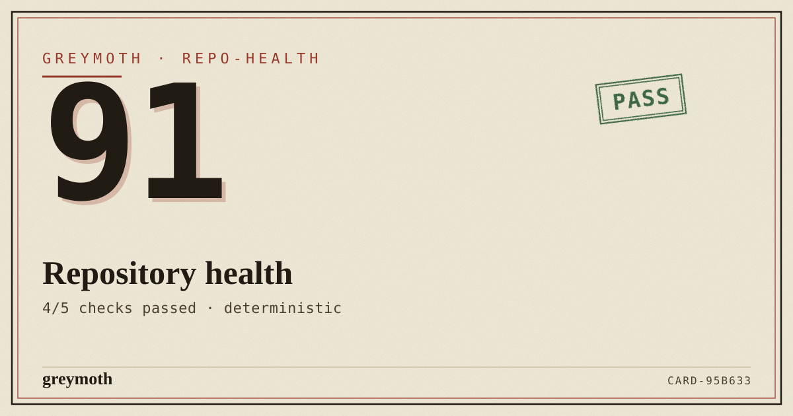
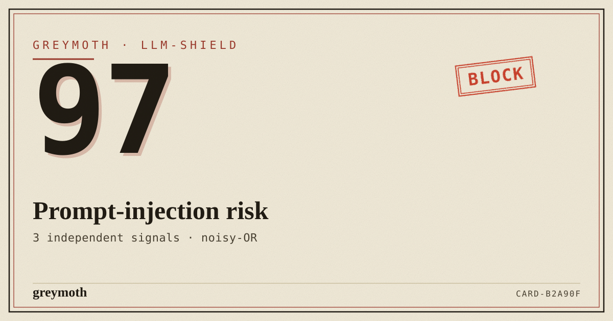
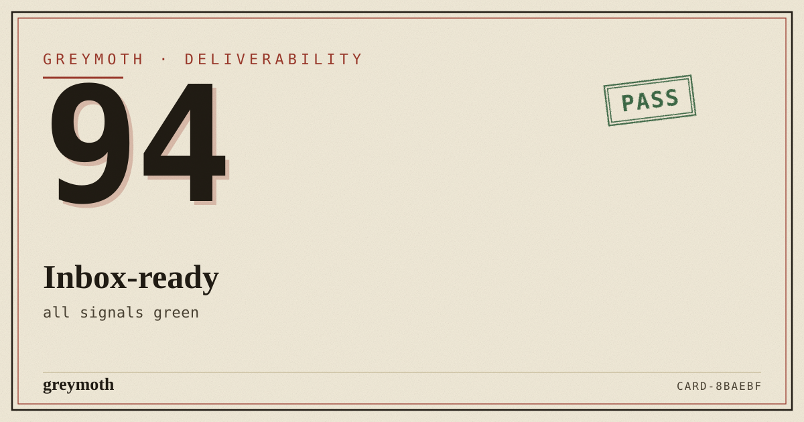

the engine behind greymoth's tools
Deterministic rules in, a shareable verdict card out. The scoring engine and the born-to-share card that had been hand-copied across 28 greymoth apps — extracted into one small toolkit. No LLM. No network. No randomness. Same input, same card, every time.
how it composes
Each package stands alone, but they click together: a subject goes in, a transparent score comes out, a verdict is resolved, and a card you can post is rendered — all from plain data.
the toolkit
Rules are plain objects. evaluate() runs a subject through them and returns findings plus a score where every point lost is attributable to a named rule. noisyOr() covers threat-style risk aggregation.
// every point lost has a name const r = evaluate(repoRules, repo) r.score // 91 failures(r) // [ci]
One score-to-verdict map and one stamp, instead of the copy reimplemented in every checker. Framework-agnostic SVG/HTML strings — drop them anywhere.
const v = verdict(91) // { level:'ok', label:'PASS', color:'#2e5e3a' } verdictStampSvg(v, x, y)
The growth primitive: turn any score into an image worth posting. A zero-dependency SVG string with a deterministic serial — runs on server, edge, or in the browser.
scoreCardSvg({ score: 91,
title: 'Repository health' })
// → <svg …> (CARD-1A2B3C)
The greymoth identity in one authoritative place: paper, ink, oxblood, the verdict-stamp, the riso grain. Import the typed objects, or pull tokens.css for --gm-* variables.
import { color } from '@greymoth/tokens' color.oxblood // '#9c3a2c'
not a mockup
Run npm run demo and these exact SVGs land in examples/out/ — repo audit, prompt-injection risk, and a clean pass. Deterministic, so they never change unless the input does.



the constraints are the point